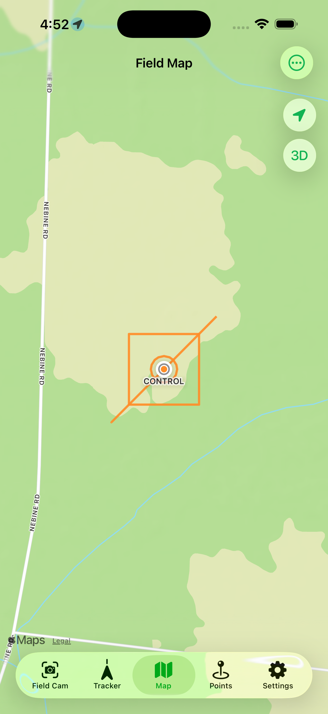
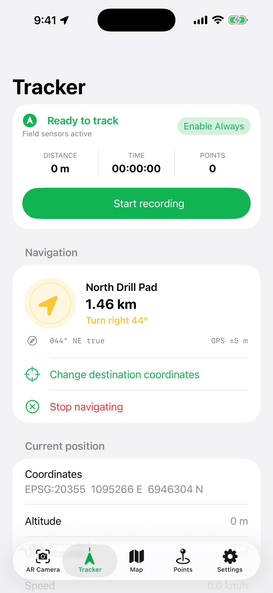

Local GIS & drawings
Work with imported spatial data on your device. Bring drawings and field targets into the same mapping workflow.
Local GIS / iPhone + iPad
FieldOps
A powerful, offline-capable local GIS tool for professionals and enthusiasts who need more than a map on their phone.
Bring your spatial data, understand the ground and record what you find. FieldOps puts mapping, terrain tools, navigation and field capture together on your device.

01 / Bring your spatial data
Import drawings, points and supported raster data, then use your location to understand where you are in relation to them. Choose the source coordinate system so your data lands in the right place.

02 / Work locally
FieldOps is built around local fieldwork. Prepare the data you need before heading out, then use the device’s location, saved files and field tools without depending on a live office connection.
Work with imported spatial data on your device. Bring drawings and field targets into the same mapping workflow.
Use supported elevation GeoTIFFs to inspect hillshade, contours, a 3D surface and cross-sections between two points.
Record where you have been and navigate towards a chosen location. Export supported tracks and points for use beyond the app.
Capture photographs with location and orientation information. Add an observation while the details are still fresh.
Offline availability depends on the data prepared on your device. Online basemaps, remote tile services and downloads need a connection. Device GPS and sensor readings are not a substitute for certified survey equipment.
For work. For your own projects.
Take project drawings and terrain into site inspections, exploration and field observations.
Locate features, record routes and keep photographic context alongside the work on the ground.
Explore your own spatial datasets and terrain, plan field visits and build a record of what you discover.
Get the app
Open the App Store to buy or download FieldOps for iPhone and iPad. The listing shows current pricing, compatibility and any in-app purchases for your region.
 Scan with your phone’s camera
Scan with your phone’s camera